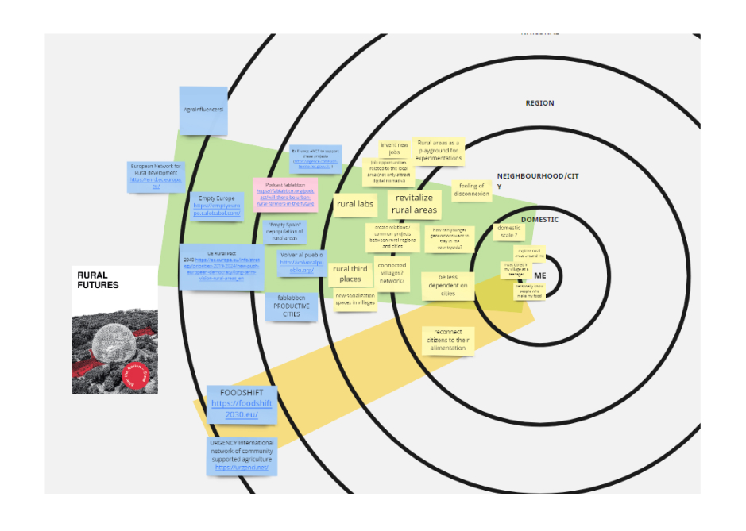
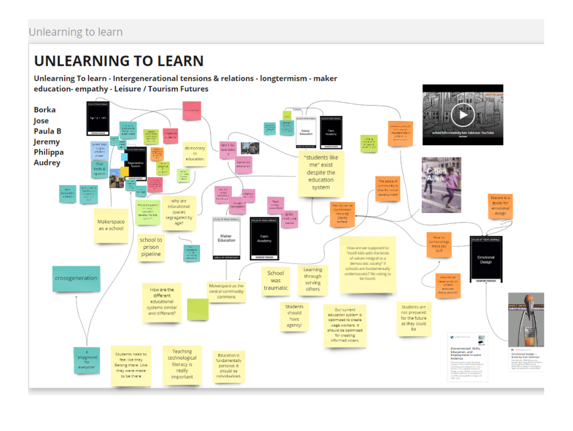

Reasons I selected the main weak signals on my individual design space (direct link to the design space):
rural futures:
carbon neutral lifestyle: This weak signal is a personal "mini fight" for me today. It relates to "Rural futures" as well as I believe we need to build resilient spaces in rural areas to prepare for the following years as natural resources availability declines.
maker education / farm academy: I picked these two cards because the topic of learning is very important to me. I would like to explore how we can learn more hands on and practical skills in our education / learning processes.
multiscalar diagram: I started to use the multiscalar diagram to extend the reflection on the Rural Futures weak signal. I will continue to use it an apply it to other weak signals from my design space. This approach "in context" helped identifying more concrete existing projects or initiatives rather that staying on an abstract concept. The personal scale was not easy to develop I need to keep working on that scale.


collaborative design spaces
I was involved in two different collaborative spaces:
One is related to education/ learning topic and we called it Unlearning to learn. We made connection between our different design spaces and discussion made new topics related to learning emerge such as empowering kids/students, cross generational learning spaces...
The second collaborative space is a mix between solarpunks, food & rural futures and other related topics. We had more trouble making new topics emerge as we were quite a large group with very different views on these topics. We might try to split the group between 2 or 3 subgroups.
someone I would like to contact
I would like to identify and contact an association in Barcelona that works closely with rural areas around the city and think about new types of relationships between cities and countryside.
an experiment I would like to make
Spent a few days in a space where new ways of living in rural areas are being experimented : for example the experiments presented on the platform Pandorahub.
a new skill I would like to add to my personal development plan
To explore the topics of "Farm academy" and "Maker education", I would like to add the develop skills related to permaculture and bioconstruction.
Concerning permaculture, a next step could be to visit the Instituto Permacultura Montsant and for bioconstruction, I started volunteering in ConnectHort last Saturday to get involved in the bioconstruction experimentations of Bioarquitectura Mediterranea (BaM).